class: titleslide <h3 class = "title-header" style = "top: 20%;"> BSc Umweltingenieurwesen<br> Angewandte Geoinformatik | HS21 </h3> <h1 class = "title-header" style = "top: 40%;">Coding in GIS I</h1> <div class = "title-header title-bottom" style = "width: 20%"> <img src="zhaw_rgb_byline_d.png" width = 100%> </div> <div class = "title-header title-bottom" style = "left: 40%; width: 47%;"> Nils Ratnaweera<br> Forschungsgruppe Geoinformatik<br> <br> Institut für Umwelt und Natürliche Ressourcen <br> ZHAW Zürcher Hochschule für Angewandte Wissenschaften<br> Grüental, Postfach, CH-8820 Wädenswil<br> <br> rata@zhaw.ch --- # Vorstellung --- name: zeitplan layout: true # Zeitplan <table align="left"> <thead align="left"> <tr> <th>Uhrzeit</th> <th>ΔT</th> <th>Thema</th> </tr> </thead> <tbody> <tr id = "first"> <td>13.00 – 13.35</td> <td>35</td> <td>Einführung Coding in GIS</td> </tr> <tr id = "second"> <td>13.35 – 13.45</td> <td>10</td> <td>Einführung Übungen</td> </tr> <tr class = "pause"> <td></td> <td></td> <td></td> </tr> <tr id = "third"> <td>13.50 – 14.00</td> <td>10</td> <td>Demo</td> </tr> <tr id = "fourth"> <td>14.00 – 14.35</td> <td>35</td> <td>Selbständiges Lösen Aufgabe 1 ("Primitive Datentypen")</td> </tr> <tr class = "pause"> <td></td> <td></td> <td></td> </tr> <tr id = "fifth"> <td>14.50 – 15.00</td> <td>10</td> <td>Besprechung Aufgabe 1 / Lösungen aufschalten</td> </tr> <tr id = "sixth"> <td>15.00 – 15.35</td> <td>35</td> <td>Selbständiges Lösen Aufgabe 2 ("Listen")</td> </tr> <tr class = "pause"> <td></td> <td></td> <td></td> </tr> <tr id = "seventh"> <td>15.50 – 16.00</td> <td>10</td> <td>Besprechung Aufgabe 2 / Lösungen aufschalten</td> </tr> <tr id = "eighth"> <td>16.00 – 16.25</td> <td>25</td> <td>Selbständiges Lösen Aufgabe 3 ("Dictionaries")</td> </tr> <tr id = "nineth"> <td>16.25 – 16.35</td> <td>10</td> <td>Zusammenfassung + Abschluss / Lösungen aufschalten</td> </tr> <tr class = "pause"> <td></td> <td></td> <td></td> </tr> <tr id = "tenth"> <td>Zuhause</td> <td>45</td> <td>Selbständiges Lösen bis und mit Aufgabe 4 ("Tabellarische Daten")</td> </tr> </tbody> </table> --- template: zeitplan class: first ??? Warum lernen wir python? --- layout: false # Lernziele * Sie sind in der Lage die Vorteile von Coden / Skripten versus "Point-and-Klick" zu erläutern -- * Sie kennen die Programmiersprachen für Einsteiger im Kontext von GIS und DataScience relevant sind -- * Sie kennen die erste grosse Einstiegshürde -- * Sie haben Lust Programmieren zu lernen --- name: themen layout: true # Themen <ul> <li id = "first">Programmieren: Eine notwendige Expertise?</li> <li id = "second">7 Gründe, warum ich gerne programmiere</li> <li id = "third">Die Qual der Wahl</li> <li id = "fourth">Programmierumgebung einrichten</li> </ul> --- template: themen class: first --- layout: true # Programmieren: Eine notwendige Expertise? --- background-image: url(steve-jobs.jpeg) background-position: center background-size: contain -- <blockquote style = "position: absolute; bottom: 35%"> Everybody in this country should learn how to program a computer... because it teaches you how to think </blockquote> <!-- Quelle: https://www.androidauthority.com/why-everyone-should-learn-to-code-663860/ --> --- <div class = "center middle"> <iframe width="560" height="315" src="https://www.youtube.com/embed/MwLXrN0Yguk?start=33" title="YouTube video player" frameborder="0" allow="accelerometer; autoplay; clipboard-write; encrypted-media; gyroscope; picture-in-picture" allowfullscreen></iframe> </div> .footnote[Quelle: https://youtu.be/MwLXrN0Yguk] ??? Code.org ist eine gemeinnützige Organisation, die sich dafür einsetzt, den Zugang zur Informatik in Schulen zu verbessern und die Beteiligung von jungen Frauen und Schülern aus anderen unterrepräsentierten Gruppen zu erhöhen. * “every Student needs to learn to code” * “coding is the 21 century writing” * “programming is the new literacy” --- class: center, middle 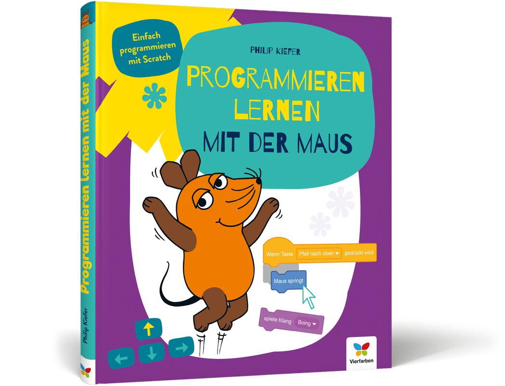 .footnote[Quelle: https://www.rheinwerk-verlag.de/programmieren-lernen-mit-der-maus_4973] --- <div class = "center middle"> 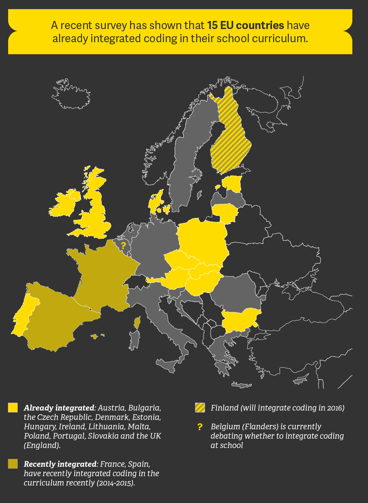 </div> .footnote[Quelle: https://www.euractiv.com/section/digital/infographic/infographic-coding-at-school-how-do-eu-countries-compare/] ??? - In Australien hat die Regierung in den letzten Jahren in MINT-Initiativen investiert, und in den Schulen von Queensland wird der Programmierunterricht bald Pflicht sein. - Im Vereinigten Königreich lernen Kinder ab fünf Jahren bereits seit 2014 die Grundlagen des Programmierens. --- <div class = "center middle"> </div> .footnote[Quelle: https://www.euractiv.com/section/digital/infographic/infographic-coding-at-school-how-do-eu-countries-compare/] --- layout: false template: themen class: second --- layout: true # 7 Gründe warum ich gerne programmiere --- -- --- Ich ♥ Programmieren, weil ich damit: 1. ... repetitive Tasks automatisieren kann 2. ... übertragbare "Tools" bauen kann 3. ... mehr Flexibilität und "Power" habe 4. ... zu Grunde liegende Funktionen besser verstehe 5. ... bessere Möglichkeiten habe zu Kollaborieren 6. ... bessere Möglichkeiten habe, Hilfe zu erhalten 7. ... reproduzierbar arbeite --- layout: true ## Automatisierung von repetitiven Tasks --- <div class = "center"> <img src="AGI_HS20_02_Coding_in_GIS_Ia9.jpg" style = "width: 75%"> </div> .footnote[Quelle: [www.vogelwarte.ch](https://www.vogelwarte.ch/assets/files/projekte/entwicklung/zustandsbericht%202018/Zustand%20der%20Vogelwelt%20in%20der%20Schweiz_Bericht%202018_D_low.pdf)] ??? 249 Arten! --- --- --- --- --- 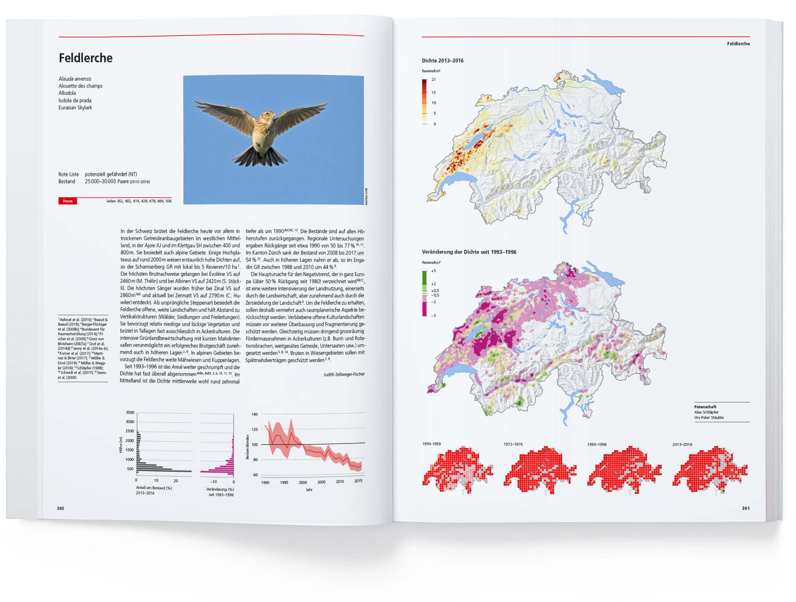 --- <div class = "center"> </div> --- ```python make_map(Neutoeter) ``` --- ```ruby `all_birds` = [Neutoeter, Ringdrossel, Turmfalke, Mittelspecht, Turteltaube, Rauchschwalbe] for bird in `all_birds`: make_map(bird) ``` -- 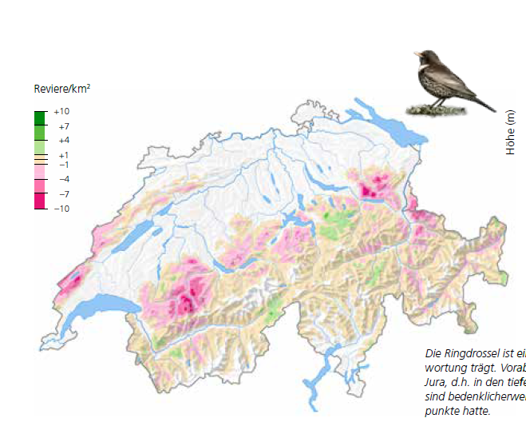 -- 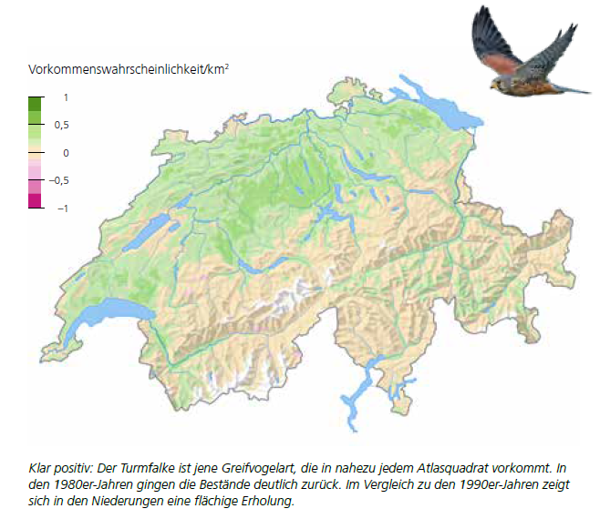 -- 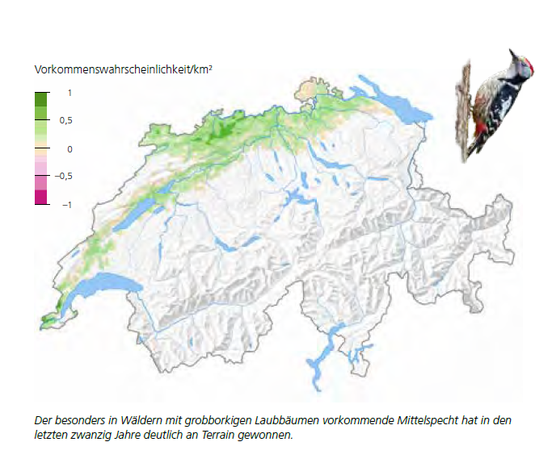 -- -- ??? anpassungen viel leichter, zb. rot/grün --- Achtung: Automatisierung * ... ist v.a. bei identischen, sehr häufig ausgeführten Tasks relevant * ... bei vielen Tasks wird dieser erhoffte Vorteil überschätzt -- 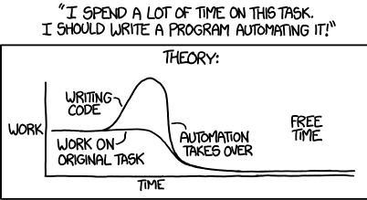 -- <img src="AGI_HS20_02_Coding_in_GIS_Ia18.png" style = "width: 60%"> .footnote[Quelle: https://xkcd.com/1319/] --- layout: true ## Übertragbarkeit von erarbeiteten Lösungen --- -- .pull-left[ <img src="AGI_HS20_02_Coding_in_GIS_Ia20.png" style = "width: 45%"> ] -- .pull-right[ <img src="AGI_HS20_02_Coding_in_GIS_Ia19.gif" style = "width: 75%"> ] ??? Alte Lösungen können für neue Probleme umfunktioniert werden - Der erste Sparschäler mit querliegender beweglicher Klinge ist das Modell „Rex“, das von Alfred Neweczerzal 1947 erfunden und im selben Jahr patentiert wurde.[3] - Alfred Neweczerzal (1899–1959)[4] war im schweizerischen Davos geboren. https://de.wikipedia.org/wiki/Sparsch%C3%A4ler --- .pull-left[ ] -- .pull-right[ <img src="AGI_HS20_02_Coding_in_GIS_Ia22.png" style = "width: 75%"> ] --- layout: true ## Flexiblität/ Power ---  .foonote[Quelle: [www.washingtonpost.com](https://www.washingtonpost.com/news/wonk/wp/2015/07/13/map-where-americas-sunniest-and-least-sunny-places-are/)] ??? In einem GUI ist man an die Optionen limitiert, die einem durch das Grafische Interface angeboten werden Mit Beherrschung der zu Grunde liegenden Programmiersprache kann man auf eine viel grössere Anzahl von Funktionalitäten zurückgreifen. --- Beispiel: Zufällige Punkte in einem Umkreis verteilen .pull-left[ <figure> <img src="AGI_HS20_02_Coding_in_GIS_Ia31_arcgis.gif" style="width:100%"> <figcaption>ArcGIS "Random Points in Polygon"</figcaption> </figure> ] -- .pull-right[ <figure> <figcaption>Python / R (eigene Funktion)</figcaption> </figure> ] --- layout: false ## Verständnis der zu Grunde liegenden Funktionen .pull-left[ <figure> <img src="AGI_HS20_02_Coding_in_GIS_Ia33.jpg" style="width:100%"> <figcaption>ArcGIS: "TopologyRules" (seitenlang und ArcGIS spezifisch)</figcaption> </figure> ] .pull-right[ <figure> 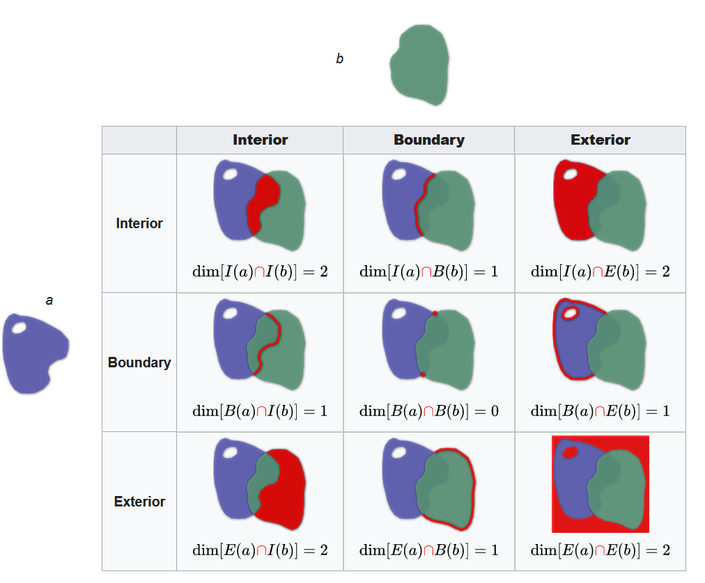 <figcaption>Grundkonzept DE-9IM: (kurz und elegant, in allen Programmiersprachen gleich)</figcaption> </figure> ] --- layout: true ## Kollaborationsmöglichkeit --- * Programmieren basiert auf einfachen Textfiles * Dies ermöglicht ein _hohes Grad_ an Kollaboration * So können gigantische OpenSource Projekte mit tausenden von Beiträgern realisiert werden * GUIs basieren auf komplexen, unzugänglichen Dateien (z.B. xlsx,docx, mxd, aprx) * Versionierung/ Kollaboration ist schwierig bis unmöglich --- 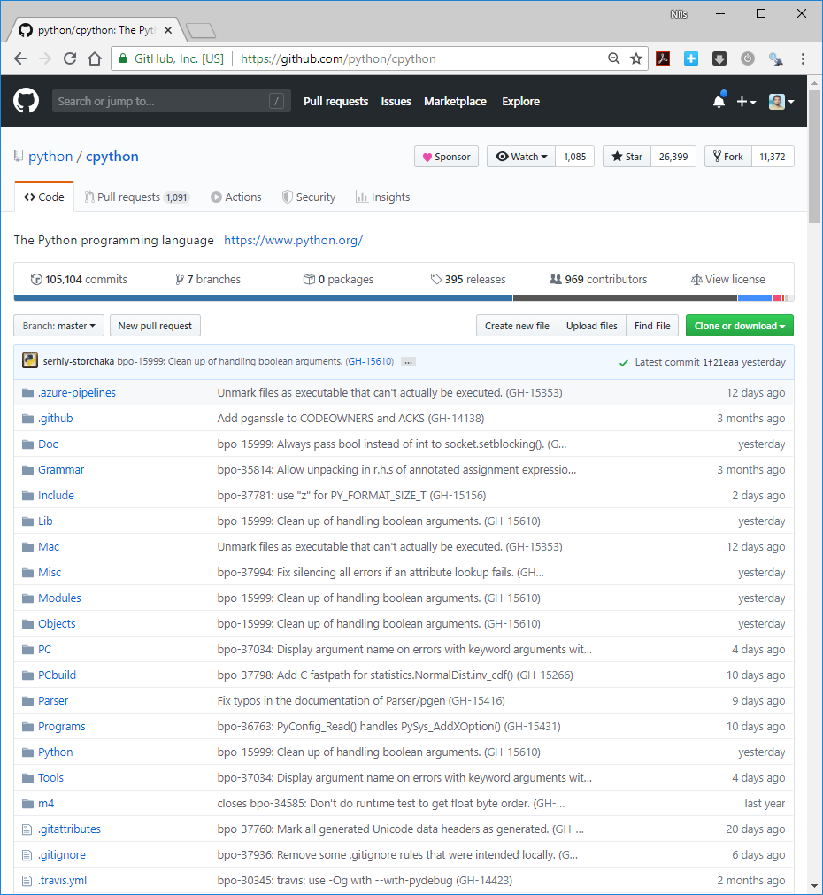 --- --- 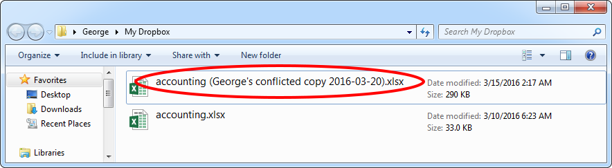 --- layout: true ## Möglichkeiten Hilfestellungen zu bekommen --- * Jedes Problem / jede Frage kann auf ein paar wenige Zeilen Code reduziert werden ("Minimal working example") * So werden z.B. auf Stackoverflow \> 5’000 Fragen _pro Tag_ gestellt<sup>1</sup>, > 90% der Fragen werden beantwortet<sup>2</sup> und es dauert ca. 10 Minuten eine Antwort zu bekommen<sup>2</sup> .footnote[1)[meta.stackexchange.com](https://meta.stackexchange.com/a/146414/404870) <br> 2)[people.eecs.berkeley.edu](https://people.eecs.berkeley.edu/~bjoern/projects/stackoverflow/)] ??? es dauert ca. 1h um eine frage zu *formulieren* --- <div class = "center"> </div> --- <div class = "center"> 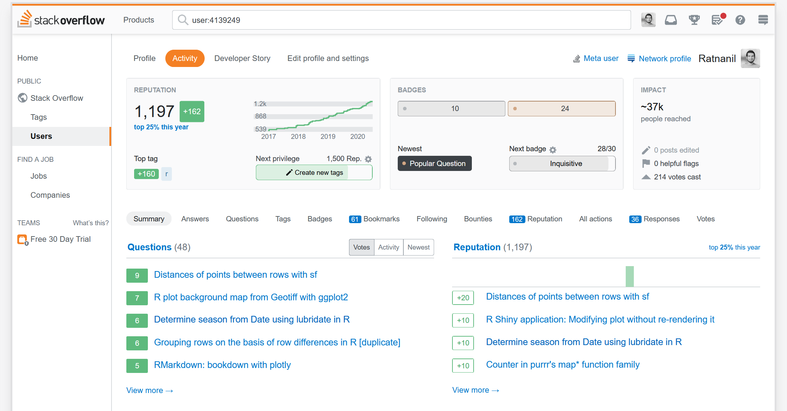 </div> --- layout: false ## Reproduzierbarkeit Diese * ... v.a. in der Wissenschaft von grosser Wichtigkeit (siehe "[Reproducibility Crisis](https://en.wikipedia.org/wiki/Replication_crisis)") * ... auch in der Privatwirtschaft wichtig * ... bei GUI-Anwendungen kaum gegeben --- template: themen class: third --- layout: true # Die Qual der Wahl --- <div style="background-image: url('AGI_HS20_02_Coding_in_GIS_Ia41.jpg'); height: 400px; width: 100%; position: relative;"> <!-- --> <img src="AGI_HS20_02_Coding_in_GIS_Ia40.png" style="position: absolute; top: 160px; left: 050px;width: 40px;"> <img src="AGI_HS20_02_Coding_in_GIS_Ia43.png" style="position: absolute; top: 160px; left: 280px;width: 40px;"> <img src="AGI_HS20_02_Coding_in_GIS_Ia44.png" style="position: absolute; top: 160px; left: 400px;width: 40px;"> <img src="AGI_HS20_02_Coding_in_GIS_Ia46.png" style="position: absolute; top: 160px; left: 630px;width: 40px;"> </div> .footnote[Quelle: [http://createlucklv.com](http://createlucklv.com/real-estate/sacrifices-vs-choices-knowing-the-difference-and-choosing-choice/)] --- --- <img src="tiobe_2.png" style = "width: 100%"> ??? Programmiersprache C --- 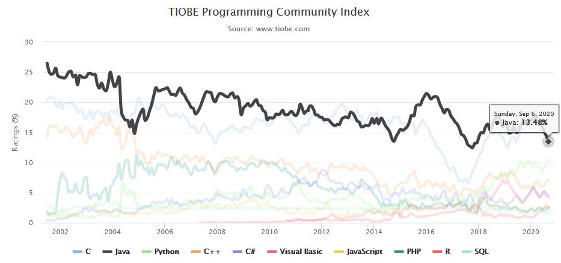 ??? Programmiersprache Java --- 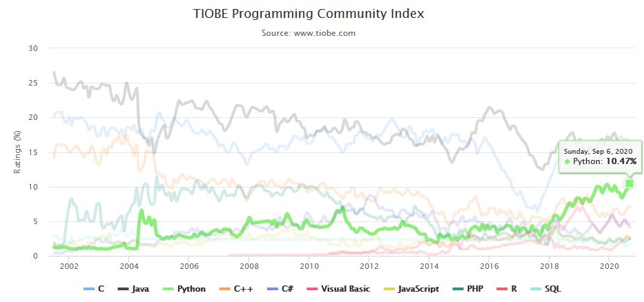 ??? Programmiersprache Python --- 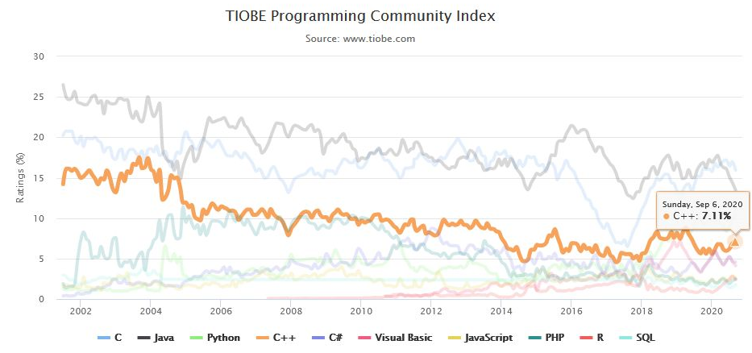 ??? Programmiersprache C++ --- ??? Programmiersprache C# --- ??? Programmiersprache Visual Basic --- 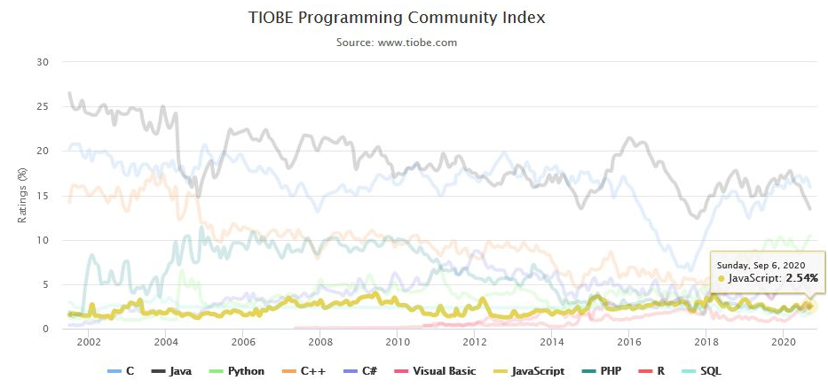 ??? Programmiersprache JavaScript --- ??? Programmiersprache R --- .footnote[Quelle: [www.kaggle.com](https://www.kaggle.com/c/kaggle-survey-2019)] --- 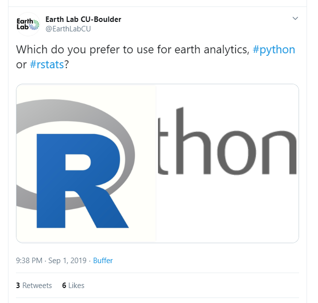 --- 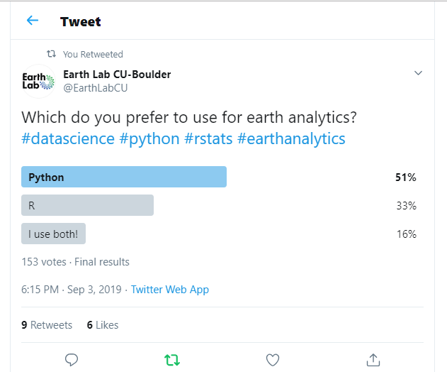 --- template: themen class: fourth --- layout: true # Programmierumgebung einrichten --- * Welche Python Version? * Welche Entwicklungsumgebung ("IDE")? * Welche Module? * Welcher Package Manager? .footnote[Quelle: [canadianliving.com](https://www.canadianliving.com/health/mind-and-spirit/article/6-reasons-you-should-make-time-to-relax-and-recharge )] -- ??? Der schwierigste Schritt für Anfänger in Python ist meiner Meinung nach das Einrichten der Programmierumgebung. ---  --- <img src = "AGI_HS20_02_Coding_in_GIS_Ia66.png" style = "width: 100%"> --- layout: true ## Showcases ---  .footnote[Quelle: [tucsonweekly.com](https://www.tucsonweekly.com/TheRange/archives/2016/02/11/weve-got-gravitational-waves)] ??? Erstes Beispiel: Am 14. September 2015 hat der Gravitationswellendetektor LIGO die erste Graviationswelle aus der verschmelzung zweier schwarzer Löcher detekteirt. --- .pull-left[ ] .pull-right[ <img src = "AGI_HS20_02_Coding_in_GIS_Ia66.png" style = "width: 100%"> ] .footnote[Code auf [Github](https://github.com/minrk/ligo-binder) verfübar] ??? Auch hier wurde Python mit Matplotlib genutzt und nicht nur das: die Datenanalyse wurde innerhalb eines Jupyter Notebooks festgehalten. Mit Anacona habt ihr nun Jupyter Notebooks ebenfalls installiert und könntet nun die Daten ruterladen und bei euch lokal ausführen. --- <div class = "center"> <img src = "AGI_HS20_02_Coding_in_GIS_Ia67.jpg" style = "width: 60%"> </div> ??? Am 10.4.2019 wurde das erste Bild von einem schwarzen Loch, generiert durch das Event Horzon Teleskop (EHT) vorgestelllt. --- <div style="background-image: url('AGI_HS20_02_Coding_in_GIS_Ia70.png'); background-repeat: no-repeat; background-size: 100%; height: 400px; width: 80%; position: relative;"> </div> ??? Dabei kursierte ebenfalls dieses Bild von Katie Bourman, eine der Wissenschaftlerinnen des EHT-Teams im internet. Was man hier auf ihrem Bildschirm sieht ist offensichtlich die eben erstellte Visualisierung des schwarzen Loches – erstellt mit Matplotlib, wie an den Achsen zu erkennen ist. Der Code ist übrigens öffentlich einsehbar --- <div style="background-image: url('AGI_HS20_02_Coding_in_GIS_Ia70.png'); background-repeat: no-repeat; background-size: 100%; height: 400px; width: 80%; position: relative;"> <img src = "AGI_HS20_02_Coding_in_GIS_Ia68.png" style="position: absolute; top: 200px; left: 100px;width: 400px;"> </div> --- <div style="background-image: url('AGI_HS20_02_Coding_in_GIS_Ia70.png'); background-repeat: no-repeat; background-size: 100%; height: 400px; width: 80%; position: relative;"> <img src = "AGI_HS20_02_Coding_in_GIS_Ia68.png" style="position: absolute; top: 200px; left: 100px; width: 400px;"> <img src = "AGI_HS20_02_Coding_in_GIS_Ia66.png" style="position: absolute; top: 000px; left: 630px; width: 200px;"> </div> .footnote[Code auf [Github](https://github.com/achael/eht-imaging) verfübar] --- layout: true ## Programmierumgebung --- Diese Tools: * gelten als "bestpractice" und "state of the art" * sind alle "Free and Open Source" * werden aktiv weiter entwickelt * werden von einer __grossen__ Community genutzt und unterstützt (stackoverflow/github) -- Was heisst das für euch? * Wir verlassen die ESRI / ArcGIS Welt * Wir lernen eine neue IDE kennen (JupyterLab) * Wir lernen einen "packagemanager" kennen (Conda) --- Anzahl Fragen auf Stackoverflow zum jeweiligen Thema .footnote[Quelle: stackoverflow.com | Abgerufen am 22.09.2020 | jeder Begriff wurde als "Tag" gesucht, mehrere Tags wurden mit "or" verbunden] --- layout: true # Tipps von einem Grossmeister --- <img src="AGI_HS20_02_Coding_in_GIS_Ia71.png" style = "width: 70%"> --- <iframe width="560" height="315" src="https://www.youtube.com/embed/vYwXMnC03I4?start=44" title="YouTube video player" frameborder="0" allow="accelerometer; autoplay; clipboard-write; encrypted-media; gyroscope; picture-in-picture" allowfullscreen></iframe> --- layout: false # Zusammenfassung * CodingLiteracy: Programmieren wird für alle immer wichtiger * Ein Programmieransatz hat gegenüber den GUI Ansatz viele Vorteile * Automatisierung von repetitiven Tasks * Übertragbarkeit von erarbeiteten Lösungen * Flexibilität / Power * Besseres Verständnis der zu Grunde legenden Funktionen * Kollaborationsmöglichkeit * Möglichkeiten Hilfestellungen zu bekommen * Reproduzierbarkeit * R und Python sind eine gute Wahl für * Einsteiger * Arbeiten im Bereich GIS / DataScience * Die Einrichtung der Programmierumgebung ist die erste grosse Hürde --- template: zeitplan class: second --- template: zeitplan class: third --- template: zeitplan class: fourth --- template: zeitplan class: fifth --- template: zeitplan class: sixth --- template: zeitplan class: seventh --- template: zeitplan class: eighth --- template: zeitplan class: nineth --- template: zeitplan class: tenth